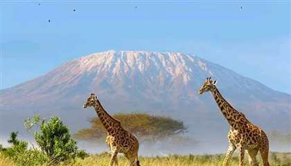

Why We Lead
Expert guides, quality gear, and clear river planning create memorable trips for every group. Each of our guides brings years of river experience, wilderness first-aid training, and a passion for sharing the thrill of white water with guests from around the world.